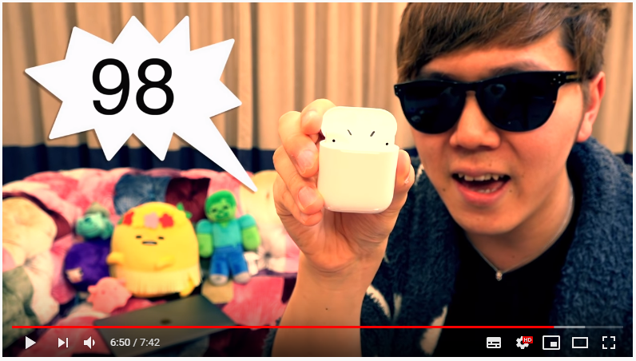
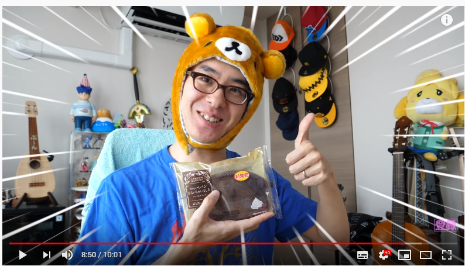
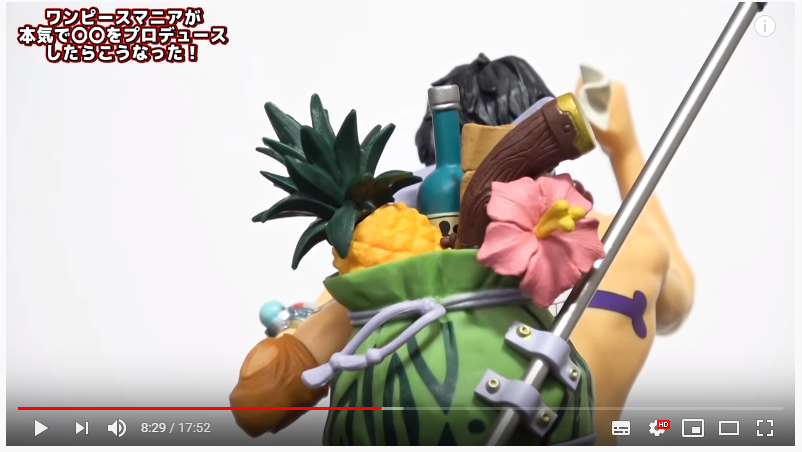
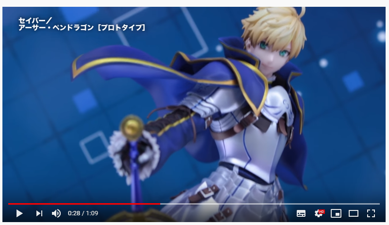

Has some interesting effects that he uses.
Has a rating system that he uses at the end of review videos.
Uses lots of small cuts to avoid the video becoming too long and reduces the repitition.
Uses colors & effects for impact
Uses colors & effects for impact
Uses light Background music
Uses a line of text when he says something important.
Reccommended scene for some effects he uses(5:30 - 5:50)
Uses a range of interesting effects.
Uses a range of camera angles and shooting styles.
Uses shots that focus on the subject.
Uses transition effects that fit in well with the scene.
Uses various camera angles and focuses on a figure from different perspectives
Uses a white background to place more focus on the figure.
Has two different styles of videos
One where he speaks and in the other he doesn't
Uses a variety of angles and camera shots
Uses background music.
I based most of my filming style of of this person.
An interesting video - An old idea that I had for a video style.
I would have liked to make a video based on sounds of various items similar to this
however I changed my idea because this style would be difficult to make into a review video.
Does not really match a review or life hack style video.